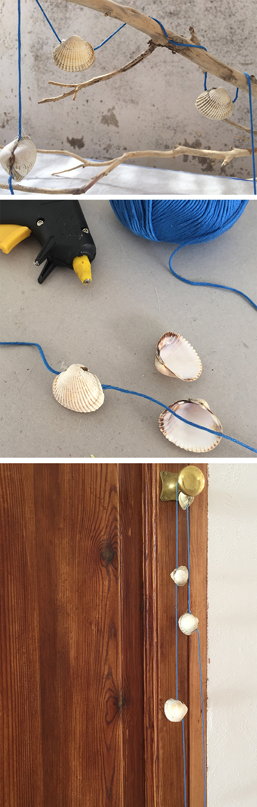

Easy summer deco. Inspiration of a incredible blog of Mrs Monday
Simple decoración de verano.Inspiration del incredible blog de Mrs Monday
Einfache Sommer Dekoration. Inspiration durch den wundervollen blogs von Mrs Monday


Easy summer deco. Inspiration of a incredible blog of Mrs Monday
Simple decoración de verano.Inspiration del incredible blog de Mrs Monday
Einfache Sommer Dekoration. Inspiration durch den wundervollen blogs von Mrs Monday


Limpia una concha que tenga dos mitades. Escribe tu deseo de verano en un papelito y doblar varias veces hasta que cabe en el interior de…
Read more →
Halloween This sympathetic little ghosts are the perfect Halloween decoration. You have to paint with white paint the acorn and glue the hats back on. Then…
Read more →
This vampire tells you the taste of your blood. Here is the printable in english and here in our video channel you can see Hannah mounting…
Read more →
A spider web of Nerea! Our first guest fairy !! She also sends the instruction via video ! Thanks artist!!! Una telaraña de Nerea! Es el…
Read more →
We made from apples shrunken heads. Unfortunately, I had the oven a little too warm so the apples are more coal heads :-) .... Creepy deco…
Read more →
Now we must start thinking of the Advent calendar. Here our calendars of the past years. Noah likes Calendars where packets are not visible. He prefers…
Read more →